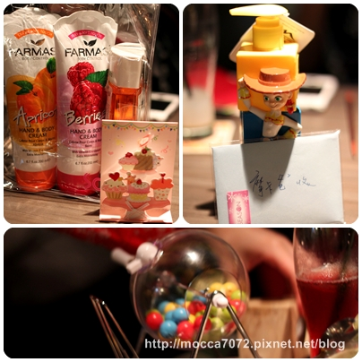
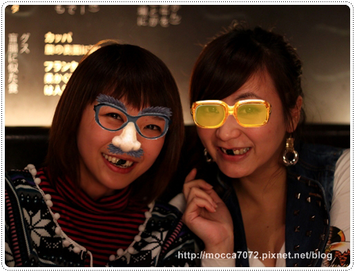
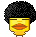
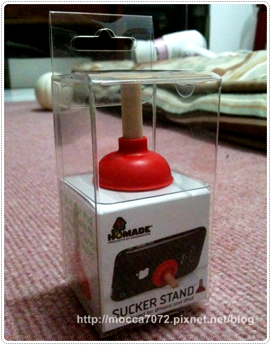

12/24 平安夜的晚上猛哥訂了間燒肉店「一頭也黑毛和牛」
12/24 平安夜的晚上猛哥訂了間燒肉店「一頭也黑毛和牛」
や在日本即是店的意思,一頭や,在日本燒肉店代表的是完整的一頭牛買入,
而能得到其他一般店沒有的稀少部位,一頭也黑毛和牛炭火燒肉專門店,
使用澳洲產BMS9+級數和牛。以上來自官網介紹
店內一進去有個吧台，原本訂位時因客滿被安排坐吧台區的，
但可能下雨的關係用餐時段並沒有滿坐！

店內的裝潢擺設挺有日式風格的味道，雖然是燒肉店，
但完全沒有臭臭的燒烤煙味，這點很厲害！
仔細看筷架然是顆花生呦！猛哥最後連那顆也丟進去烤！XD

一頭也PaRiPaRi沙拉，推！非常清爽又開胃，很好吃
日式烤飯團-明太子＆鮭魚口味，不推！我覺得超普通的

肉類的部分我們基本上就看心情亂點！哈哈哈
不虧是專門店，它的牛肉真的都超好吃！超嫩的！
尤其是去骨牛小排，超級好吃但真他x的好貴.... 點一盤就快吐血了~
點一盤就快吐血了~
至於豬肉我就不建議了，跟牛肉沒得比啊！我們好傻還點來吃吃抗～

同行的捧油因為感動我們陪她一起過節，還準備小禮物呦！
(她老公去演九品芝麻官賺奶粉錢惹～.gif") ）
）

吃烤飯團也能搞成醬！誰來救救我這不耍白痴就會屎掉的病啊啊啊啊～
很美厚～我也覺得！哈哈哈哈哈哈
會當好朋友不是沒有原因，一整個配合度超高，完全沒有彆扭這回事兒～

在店外拍拍也很有fu吶~拍立得也是聚會必備！
今年的聖誕節謝謝超猛的猛哥帶我們去吃好料呦！

本次消費方式是採單點，價位真的是不便宜，整頓吃下來荷包好傷啊！
我只能說這種奢侈的美食一年一次就可以惹！
還是吃到飽的平價適合我們這可可年的上班族哇！
http://www.ittouya.com/index.asp
訂位專線：02-8773-7872
台北市忠孝東路4段216巷8弄8號
＝＝＝＝＝＝＝＝＝＝＝＝＝＝＝＝＝＝＝＝＝＝＝＝＝＝＝＝＝＝＝＝＝＝＝＝＝＝＝＝＝＝＝＝
禮物第二發！泥們看，這是我收到最喜歡的小禮物！馬桶吸把一支
猛哥這傢伙不知吃錯什麼藥，這次給的小驚喜還真不少！開心！
我最愛這種創意的小玩意兒啦！但通常會被罵浪費錢！（卡內拔～指！）

這其實是讓我的"唉鳯"可以靠背的小東西
但做成馬桶吸把的造型一整個燒到我的無腦神經~XDDD
不過基本上這不是走實用性質的好唄！
所以也不用問我好不好用了～因為我只會回你：好好玩哦！.gif")

你看！是不是很好玩～
誰真的可以救救我這不耍白痴就會屎掉的病啊啊啊啊～
ㄎㄎㄎ~吸唉鳯吸到後來不好玩，居然拿來吸頭！
連WOW的內場弟迪也無辜被拖下水！哇哈哈哈~
但.........腦殘是治不好的

玩過頭的下場就是.......對！我本人現在呈現印堂發黑的狀況，乾！

我老木：哈哈哈哈～這個很久才會消！
我：...........................(媽媽只說這句,醬對嗎!?)
一切只能證明這吸把的吸力很強，各位也被燒到的捧油，這可以買呀！
OH~YA~腦殘有理！無腦萬歲！XDDDDDDDDDDD